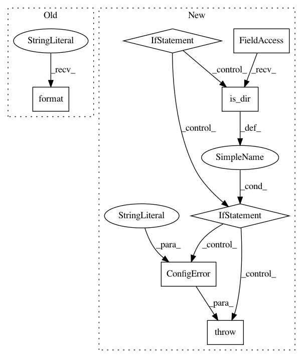

286a864220a00732d382a75051e11877acf13c3f,deeppavlov/core/models/keras_model.py,KerasModel,load,#KerasModel#Any#Any#Any#Any#Any#Any#Any#Any#Any#Any#Any#,141
Before Change
if self.ser_path.is_dir():
opt_path = "{}/{}_opt.json".format(self.ser_path, self._ser_file)
weights_path = "{}/{}.h5".format(self.ser_path, self._ser_file)
else:
opt_path = "{}_opt.json".format(self.ser_path)
weights_path = "{}.h5".format(self.ser_path)
After Change
model with loaded weights and network parameters from files
but compiled with given learning parameters
if self.load_path:
if isinstance(self.load_path, Path) and not self.load_path.parent.is_dir():
raise ConfigError("Provided save path is incorrect!")
opt_path = Path("{}_opt.json".format(str(self.load_path.resolve())))
weights_path = Path("{}.h5".format(str(self.load_path.resolve())))
if opt_path.exists() and weights_path.exists():
print("___Initializing model from saved___"
"\nModel weights file is {}"
"\nNetwork parameters are from {}".format(weights_path.name, opt_path.name))
self.opt = read_json(opt_path)
model_func = getattr(self, model_name, None)
if callable(model_func):
model = model_func(params=self.opt)
else:
raise AttributeError("Model {} is not defined".format(model_name))
print("Loading weights from `{}`".format(weights_path.name))
model.load_weights(str(weights_path))
optimizer_func = getattr(keras.optimizers, optimizer_name, None)
if callable(optimizer_func):
optimizer_ = optimizer_func(lr=lr, decay=decay)
else:
raise AttributeError("Optimizer {} is not callable".format(optimizer_name))
loss_func = getattr(keras.losses, loss_name, None)
if callable(loss_func):
loss = loss_func
else:
raise AttributeError("Loss {} is not defined".format(loss_name))
metrics_funcs = []
for i in range(len(metrics_names)):
metrics_func = getattr(keras.metrics, metrics_names[i], None)
if callable(metrics_func):
metrics_funcs.append(metrics_func)
else:
metrics_func = getattr(add_metrics_file, metrics_names[i], None)
if callable(metrics_func):
metrics_funcs.append(metrics_func)
else:
raise AttributeError(
"Metric {} is not defined".format(metrics_names[i]))
model.compile(optimizer=optimizer_,
loss=loss,
metrics=metrics_funcs,
loss_weights=loss_weights,
sample_weight_mode=sample_weight_mode,
weighted_metrics=weighted_metrics,
target_tensors=target_tensors)
return model
else:
return self.init_model_from_scratch(model_name, optimizer_name,
lr, decay, loss_name,
metrics_names=metrics_names,
add_metrics_file=add_metrics_file,
loss_weights=loss_weights,
sample_weight_mode=sample_weight_mode,
weighted_metrics=weighted_metrics,
target_tensors=target_tensors)
else:
return self.init_model_from_scratch(model_name, optimizer_name,
lr, decay, loss_name, metrics_names=metrics_names,
add_metrics_file=add_metrics_file,
loss_weights=loss_weights,
sample_weight_mode=sample_weight_mode,
weighted_metrics=weighted_metrics,
target_tensors=target_tensors)
@abstractmethod
def train_on_batch(self, batch):
Method trains the model on a single batch of data
In pattern: SUPERPATTERN
Frequency: 3
Non-data size: 7
Instances
Project Name: deepmipt/DeepPavlov
Commit Name: 286a864220a00732d382a75051e11877acf13c3f
Time: 2018-01-24
Author: ol.gure@gmail.com
File Name: deeppavlov/core/models/keras_model.py
Class Name: KerasModel
Method Name: load
Project Name: deepmipt/DeepPavlov
Commit Name: 286a864220a00732d382a75051e11877acf13c3f
Time: 2018-01-24
Author: ol.gure@gmail.com
File Name: deeppavlov/core/models/keras_model.py
Class Name: KerasModel
Method Name: save
Project Name: deepmipt/DeepPavlov
Commit Name: d86f0ef86868899b112ac61e598a3333fac66ad2
Time: 2018-01-24
Author: arkhipov@yahoo.com
File Name: deeppavlov/core/models/tf_model.py
Class Name: TFModel
Method Name: save